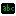

Библиотека Ввод/вывод включает в себя компоненты, созданные как соответствия типичным электронным компонентам для взаимодействия с пользователем.
| Кнопка | |
| Джойстик | |
| Клавиатура | |
| Светодиод | |
| 7-сегментный индикатор | |
| Шестнадцатеричный индикатор | |
| Светодиодная матрица | |
|  | Терминал |